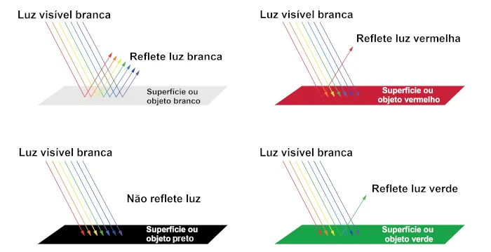

Menu
FENOMENOS ONDULATORIOS
Nesta página será abordado conteúdo sobre Fenômenos Ondulatórios, Ondas, Tipos de Ondas e etc.
Definição de onda:
“Segundo Rafael Helerbrock, ondas são perturbações que se deslocam no espaço transportando, exclusivamente, energia de um ponto a outro, sem realizar transporte de matéria."
Figura 1: Onda e Suas Partes

Os pontos mais altos são chamados de cristas, e os mais baixos são chamados de vales, a distância entre o começo e o fim de uma onda é chamado período(T), representada pela parte em vermelho da figura 1, e também temos a amplitude(A), que é a “altura” da onda, ou seja, é a variação de altura em relação ao ponto inicial(linha do meio/tempo) (HELERBROCK, 2023).
Há mais uma propriedade chamada Frequência, que é medida em Hertz (Hz) e que nos diz de quanto em quanto tempo uma crista/vale passa por um ponto, a fórmula para se calcular a Frequência é 1 ➗ T (Período) (HELERBROCK, 2023).
E tendo esses dados podemos dizer que tipo de onda é, pois cada tipo de onda tem Período, Amplitude etc "específicas", e o meio que usamos para isso é medir a velocidade com que a onda se propaga com a fórmula Velocidade(V)= Comprimento da onda (que é a distância entre uma crista e outra, ou um vale e outro . Geralmente medido em Metros(M) ) e a Frequência que é medida em Hertz (Hz) logo tendo a fórmula V= C x F assim como mostrado na Figura 2. Ou também pode aparecer desse jeito segundo (HELERBROCK, 2023).
v = velocidade de propagação da onda (m/s)
λ = comprimento de onda (m)
f = frequência (Hz ou s-1)
LONGITUDINAIS E TRANSVERSAIS
Segundo Frederico Borges de Almeida as ondas Longitudinais são ondas que podem se mover em qualquer direção, onde ela pode se mover da esquerda e voltar para a direita ou ir para a direita e voltar para a esquerda, como exemplo podemos dar uma mola que ao ser movimentada vai e volta e suas ondas se modificam dependendo do instante, mas já a Transversais, são ondas que se movem em uma direção para sempre, por exemplo uma corda presa a algo, se você agitá-la ela formará uma onda, irá até o ponto onde está presa e voltará a origem, assim como na figura 3.
Figura 2: Ondas Longitudinais e Transversais

Algo que também é legal destacar são que ondas podem se propagar de forma unidimensional, bidimensional e tridimensional, onde cada uma ao se propagar de forma específica acaba tendo uma "características" próprias (LOOS, 2023).
TIPOS DE ONDAS
Eletromagnéticas: Segundo Rosimar Gouveia, ondas eletromagnéticas são ondas tridimensionais que se propagam na velocidade da luz e podem se propagar em qualquer lugar, como no vácuo do espaço ou na terra, sem necessitar de um material para percorrer, um exemplo é a luz.(HELERBROCK, 2023)
Mecânicas: Já as ondas mecânicas necessitam de algo para transitar como ar, água, ou algum material, um exemplo é o som, e como essas ondas precisam de algo para percorrer não podem se propagar no espaço (GOUVEIA, 2023).
Gravitacionais: E as ondas gravitacionais, são as ondas que ocorrem quando dois corpos de grande massa colidem e geram ondas gravitacionais. Esse tipo de onda também não necessita de algo para se propagar, podendo assim se propagar no vácuo do espaço (HELERBROCK, 2023).
Mas dentro das ondas eletromagnéticas, mecânicas e gravitacionais existem seus tipos. Segundo Rafael Helerbrock existem os tipos mais famosos de ondas eletromagnéticas e que aparecem no nosso cotidiano, como:
Ondas de rádio: são ondas que fazem oscilações em partículas e conseguem transmitir energia na forma de falar, com, mensagem e etc; da água, e é por isso que quando você utiliza o microondas para esquentar algo que tenha mais água esse alimento esquenta mais rápido, pois suas ondas se comportam como a da água presente no alimento (GOUVEIA, 2023);
Infravermelho: promove a vibração molecular, é uma das principais formas de transmissão de calor (HELERBROCK, 2023);
Luz visível: é bem provável que seja necessário uma página inteira apenas para falar da luz, mas a luz é composta de uma partícula chamada fóton e que se comporta como onda (HELERBROCK, 2023);
Ultravioleta: promove o agitamento dos elétrons, e que pode “jogar” elétrons para fora da camada de valência(última camada do átomo) (HELERBROCK, 2023);
Raios x: é como se você jogasse um fóton em um átomo e ele jogasse fora um elétrons, como se um fóton e um átomo colidisse e um elétron fosse ejetado, e depois o átomo devolve esse fóton em uma menor frequência (HELERBROCK, 2023);
Raios gama: raios gama são ondas que são emitidas de elementos radioativos, podem ser emitidos naturalmente por átomos instáveis ou por fissão ou fusão nuclear. Essa onda é emitida quando um átomo tem seu núcleo instável e para não explodir precisa emitir radiação para se estabilizar. A radiação Alfa e Beta também são radiações, mas ao contrário da gama a Alfa e Beta são partículas que se comportam como ondas (HELERBROCK, 2023);
As ondas Mecânicas são divididas em unidimensionais, bidimensionais e tridimensionais, como já foi dito no texto (GUILHERME, 2023).
FENOMENOS
Segundo Rafael Helerbrock ondas conforme vão se propagando pelos lugares se comportam de uma forma, e dependendo do lugar e condições que se propagam acontecem fenômenos que serão listados aqui:
Refração: Segundo Rosimar Gouveia a refração é o fenômeno que acontece quando a onda está percorrendo e encontra algo no caminho, mas continua propagando só que em um sentido diferente, assim como está sendo mostrado na imagem;
Figura 3: Refração
Difração: A difração é quando uma onda atinge algo e acaba mudando sua forma de propagação, a onda neste caso contorna os obstáculos. Um exemplo é quando ouvimos um som mesmo se ele estiver sendo emitido do outro lado de uma parede (GOUVEIA, 2023).
Figura 4: Ondas Longitudinais e Transversais
Absorção: Segundo Pâmella Raphaella Melo a absorção é o fenômeno quando a luz é emitida e bate em um corpo, então dependendo do corpo a luz será refletida ou não, assim como mostrado na imagem.
Figura 5: Absorção
Ressonância: A ressonância é o fenômeno quando corpos recebem ondas semelhantes passam a emitir esta onda com maior força e também vibrar na mesma frequência. Um ótimo exemplo é uma das formas de afinar um instrumento musical, existe uma ferramenta chamada diapasão, e que vibra em uma certa frequência quando algo bate nele, então você vai apertando ou soltando as cordas até que a vibração seja parecida com a emitida pelo diapasão (MELÔ, 2023).
Figura 6: Ressonância
Interferência: A interferência é quando duas ondas interagem, e ou se aniquilam ou se tornam uma só. Dizemos que é interferência construtiva quando as ondas se juntam e formam uma nova onda maior e com mais amplitude, e quando a interferência é destrutiva é quando duas ondas se chocam e formam uma uma onda muito fraca ou se aniquilam e é anulada. Um exemplo é quando duas pessoas estão fazendo uma ligação telefônica um perto do outro, as ondas de informações se chocam e geram ruídos (MELÔ, 2023).
Figura 7: Interferência
Dispersão: A dispersão é quando uma onda atinge um corpo e decompõe seus elementos em várias ondas de características diferentes(amplitude, frequência e etc) (MELÔ, 2023).
Figura 8: Dispersão
Polarização: A polarização acontece quando duas ondas transversais estão “andando” juntas, mas ao passar por uma ferramenta chamada “polarizador” uma destas ondas é filtrada e apenas uma delas passa. Isso acontece quando você vai tirar uma foto e seu celular filtra as ondas para aparecer apenas o interessado na foto (MELÔ, 2023).
Figura 9: Polarização
Refêrencias
HELERBROCK, Rafael. "O que é onda?". Brasil Escola. Disponível em: https://brasilescola.uol.com.br/o-que-e/fisica/o-que-e-onda.htm. Acesso em 13 de Mar de 2023.
HELERBROCK, Rafael. "Classificação das ondas"; Brasil Escola. Disponível em: https://brasilescola.uol.com.br/fisica/a-classificacao-das-ondas.htm. Acesso em 14 de Mar de 2023.
LOOS, Pedro. “O que é uma onda?” Ciência Todo Dia. Disponível em: https://www.youtube.com/watch?v=M2D5-zXlD6A&t=7s. Acesso em 13 de março de 2023.
GOUVEIA, Rosimar. "Ondas". Toda Materia. Disponível em: https://www.todamateria.com.br/ondas/. Acesso em 14 Mar. 2023.
BORGES, Frederico. "Ondas". Mundo Educação. Disponível em: https://mundoeducacao.uol.com.br/fisica/ondas-2.htm. Acesso em 13 Mar. 2023.
CARDOSO, Mayara “Modelo Atômico de Broglie”. InfoEscola. Disponível em: https://www.infoescola.com/quimica/modelo-atomico-de-broglie/. Acesso em 13 Mar. 2023.
GUILHERME, Luiz. "Ondas mecânicas". Brasil Escola. Disponível em: https://brasilescola.uol.com.br/fisica/ondas-mecanicas.htm. Acesso em 18 Mar. 2023.
MELÔ, Pâmella. "Ondulatória". Mundo Educação. Disponível em: https://brasilescola.uol.com.br/fisica/ondas-mecanicas.htm. Acesso em 18 Mar. 2023.